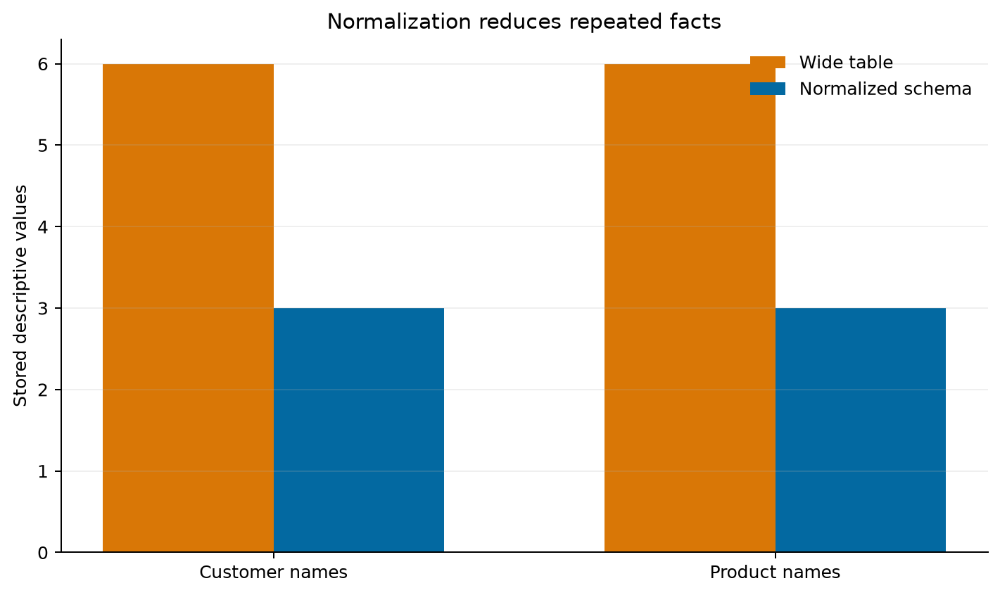

Turning repeated records into reliable relational structures
Published
Aug 2026
Database Design and Normalization
ID: DBSQL-005
Type: Core guide chapter
Audience: Data practitioners designing or maintaining relational databases
Theme: Structure data so that meaning, integrity, and change remain manageable
Learning objectives
By the end of this chapter, you will be able to:
translate business rules into entities, attributes, keys, and relationships;
distinguish candidate, primary, natural, surrogate, and foreign keys;
identify insertion, update, and deletion anomalies;
move a table through first, second, and third normal form;
enforce relational rules with SQL constraints; and
decide when normalization or deliberate denormalization is appropriate.
Design begins with meaning
A database is not merely a collection of tables. It is an explicit model of a domain. Before writing CREATE TABLE, state the rules that the database must preserve.
Consider a small order system:
a customer may place many orders;
each order belongs to exactly one customer;
an order contains one or more products;
a product can occur in many orders;
the price charged is recorded when the order is placed; and
the quantity of each order line must be positive.
These rules reveal four entities: customers, orders, products, and order_items. The last entity resolves the many-to-many relationship between orders and products and stores facts that belong to that relationship.
An entity is a distinguishable thing about which the system stores facts. An attribute describes an entity. Good attributes are atomic at the level needed by the application, have a clear domain, and describe the key, the whole key, and nothing but the key.
Avoid columns whose meaning changes by context, such as value1, or columns that encode repeated groups, such as product_1, product_2, and product_3. Those designs hide relationships in column names and impose an artificial limit on the number of related records.
Choosing keys
Key type
Purpose
Order-system example
Candidate key
Uniquely identifies a row and could be primary
customers.email
Primary key
Selected identifier for a row
orders.order_id
Natural key
Has domain meaning
Email or product SKU
Surrogate key
System-generated, meaning-free identifier
Integer customer_id
Composite key
Uses multiple columns
(order_id, product_id)
Foreign key
References a key in another relation
orders.customer_id
Surrogate keys make references compact and stable, but they do not replace business uniqueness rules. If two customers cannot share an email address, declare UNIQUE (email) even when customer_id is the primary key.
This looks convenient because one row contains everything needed for a report. However, customer and product facts repeat on every matching order line. Repetition creates three classic anomalies.
Update anomaly: changing a customer’s email requires updating every order line for that customer. A missed row creates conflicting truths.
Insertion anomaly: a product cannot be recorded until it appears in an order unless unrelated order columns accept meaningless null values.
Deletion anomaly: deleting the only order containing a product may also remove the only stored description of that product.
The problem is not repetition alone. The deeper problem is that attributes in the row depend on different determinants.
Functional dependencies
A functional dependency X → Y means that a value of X determines exactly one value of Y. For the wide order table:
The logical row key is (order_id, product_id), yet many attributes depend on only one part of that key or on another non-key attribute. Normalization uses these dependencies to separate facts by what determines them.
The normalization sequence
First normal form: one value per cell
A relation is in first normal form (1NF) when each row is uniquely identifiable, every column contains values from one domain, and repeating groups are represented as rows rather than numbered columns or lists.
Moving products from product_1, product_2, and product_3 into separate order-line rows reaches 1NF, but customer and product facts may still repeat.
Second normal form: depend on the whole key
A relation is in second normal form (2NF) when it is in 1NF and every non-key attribute depends on the entire candidate key. This matters when a key has multiple columns.
In the wide table, order_date depends only on order_id, while product_name depends only on product_id. Move order facts to orders and product facts to products. Keep quantity and the price charged in order_items, because they describe a particular product in a particular order.
Third normal form: no non-key intermediaries
A relation is in third normal form (3NF) when it is in 2NF and non-key attributes do not depend transitively on a key through another non-key attribute.
If orders stored customer_id, customer_name, and customer_email, then:
Move customer facts to customers; keep only customer_id as the reference in orders. A customer change then occurs once and is visible through joins.
Implementing the normalized schema
The accompanying SQL file creates the schema used in the practical:
scripts/sql/05-normalized-order-schema.sql
-- Four relations, each with one clear subject.CREATETABLE customers ( customer_id INTEGERPRIMARYKEY, customer_name TEXT NOTNULL, email TEXT NOTNULLUNIQUE);CREATETABLE products ( product_id INTEGERPRIMARYKEY, product_name TEXT NOTNULL, current_price NUMERICNOTNULLCHECK (current_price >=0));CREATETABLE orders ( order_id INTEGERPRIMARYKEY, order_date TEXT NOTNULL, customer_id INTEGERNOTNULL,FOREIGNKEY (customer_id) REFERENCES customers (customer_id));CREATETABLE order_items ( order_id INTEGERNOTNULL, product_id INTEGERNOTNULL, quantity INTEGERNOTNULLCHECK (quantity >0), unit_price NUMERICNOTNULLCHECK (unit_price >=0),PRIMARYKEY (order_id, product_id),FOREIGNKEY (order_id) REFERENCES orders (order_id) ONDELETECASCADE,FOREIGNKEY (product_id) REFERENCES products (product_id));
unit_price deliberately appears in order_items while current_price appears in products. They represent different facts: the historical price charged and the product’s current catalogue price. Normalization separates facts by meaning; it does not remove every superficially similar value.
Constraints are executable rules
Constraint
Rule enforced
PRIMARY KEY
Every stored entity or relationship is uniquely identifiable
FOREIGN KEY
Referenced parents must exist
NOT NULL
Required facts cannot be omitted
UNIQUE
Candidate-key values cannot be duplicated
CHECK
Values must satisfy a row-level domain rule
SQLite requires PRAGMA foreign_keys = ON for foreign-key enforcement on each connection. Other database systems enable this behavior differently, so verify the engine rather than assuming that declared constraints are active.
Reconstructing useful views
Normalization optimizes the storage of facts, not necessarily the shape of an analytical result. A join can reconstruct the familiar order-line view:
SELECT o.order_id, o.order_date, c.customer_name, p.product_name, oi.quantity, oi.unit_price, oi.quantity * oi.unit_price AS line_totalFROM orders AS oJOIN customers AS cON c.customer_id = o.customer_idJOIN order_items AS oiON oi.order_id = o.order_idJOIN products AS pON p.product_id = oi.product_idORDERBY o.order_id, p.product_id;
Tables provide a reliable source of truth; views and queries provide shapes suited to applications and analysis.
Practical: measure repetition and test integrity
Run the reproducible example from the repository root:
bash scripts/bash/05-run-normalization-demo.sh
The workflow:
creates equivalent wide and normalized SQLite designs in memory;
inserts the same business records into both designs;
calculates repeated customer and product values;
attempts invalid inserts to test the constraints;
verifies that joined normalized rows reproduce the wide-table totals; and
writes a CSV summary and comparison plot.

Figure 7.1: Normalization removes repeated descriptive values from storage while preserving report reconstruction.
The number of rows is not expected to fall in every normalized design. The important result is that each fact has one authoritative home and invalid relationships are rejected before they become data-quality problems.
When denormalization is justified
Normalization is the default for transactional systems because updates and integrity matter. Deliberate denormalization can be appropriate for read-heavy analytical systems, cached API responses, materialized views, or dimensional models where predictable query performance is worth controlled redundancy.
Before denormalizing, document:
the measured workload or performance problem;
which fact will be duplicated;
which source remains authoritative;
how copies will be synchronized and tested; and
how stale or conflicting values will be detected.
Denormalization should be an explicit performance decision, not an accidental substitute for understanding the data model.
Design review checklist
Before accepting a relational design, ask:
Does every table represent one entity or relationship?
Does every table have a declared primary key?
Are business candidate keys protected with UNIQUE constraints?
Do foreign keys match the relationship optionality and deletion policy?
Are repeating groups represented as rows?
Does every non-key attribute depend on the key, the whole key, and nothing but the key?
Are historical facts distinguished from current reference values?
Are domain rules enforced as close to storage as practical?
Can common outputs be reconstructed without ambiguous joins?
Is any redundancy intentional, measured, and governed?
Exercises
Add a categories table and relate each product to one category. Identify the functional dependency that justifies the new relation.
Allow the same product to appear twice in one order with separate line numbers. Redesign the order_items key without losing integrity.
Decide whether deleting a customer with existing orders should be restricted, cascaded, or represented with a soft-delete status. Explain the audit implications.
Add shipping addresses. Determine whether an order should reference the customer’s current address or preserve an order-time snapshot.
Extend the Python validation so that it tests duplicate emails and negative product prices as well as orphaned order items and zero quantities.
Chapter summary
Relational design turns domain rules into durable structure. Functional dependencies expose where unrelated facts have been combined. First normal form removes repeating groups, second normal form removes partial dependencies, and third normal form removes transitive dependencies. Keys and constraints then make those design decisions executable. The result is not merely tidy tables: it is a database in which each fact has a clear home, changes are safer, and downstream queries can be trusted.